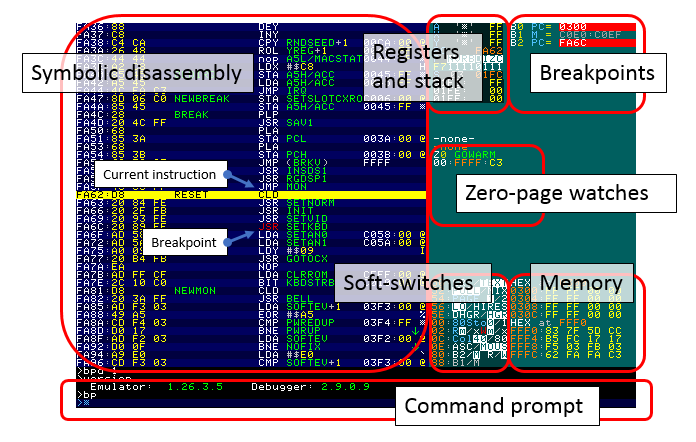

Debugger Screen Layout
This section gives an overview of the debugger's screen layout.
Here's a typical debugger view (with annotations describing the parts):

Soft-switches
This encodes information about the video and MMU soft-switches.
The first 5 rows describe the current video settings and can be interpreted as follows:
- 50: $C050 - GR /TEXT (inverse indicates which is active)
- 52: $C052 - FULL/MIX (inverse indicates which is active)
- 54: $C054 - PAGE 1/2 (inverse indicates which is active)
- 56: $C056 - LO/HIRES (inverse indicates which is active)
- 5E: $C05E - DHGR/HGR (inverse indicates which is active)
The next 6 rows describe the current MMU settings and can be interpreted as follows:
- 00: $C000 - 80Sto0/1 (inverse indicates state of 80STORE)
- 02: $C002-C005: Rm/xWm/x (NB. 'R' is blue and 'W' is red for readability)
- Rm Read from main mem for $0200-$BFFF; Use OUT C002 to enable
- Rx Read from aux mem for $0200-$BFFF; Use OUT C003 to enable
- Wm Write to main mem for $0200-$BFFF; Use OUT C004 to enable
- Wx Write to aux mem for $0200-$BFFF; Use OUT C005 to enable
- 0C: $C00C - Col40/80 (inverse indicates state of 80COL)
- 0E: $C00E - ASC/MOUS (inverse indicates state of ALTCHARSET)
- 80: $C080-C087: B2/M R/W (Language Card Bank2)
- A red 'x' if ALTZP (and Alt Language Card) is set by a write to $C009.
- 88: $C088-C08F: B1/M rNN (Language Card Bank1 and RamWorks 64K bank number)
- 'B2' or 'B1' is inverse when that LC bank is enabled.
- If 'M' is inverse: ROM is active for reading.
- If 'M' is not inverse: LC2 or LC1 RAM is active.
- If 'W' is inverse: RAM is write enabled.
- If 'W' is not inverse: RAM is write protected.
- 'rNN' will appear if a RamWorks 64K bank is active.
- 'sNN' will appear if a Saturn 16K bank is active.